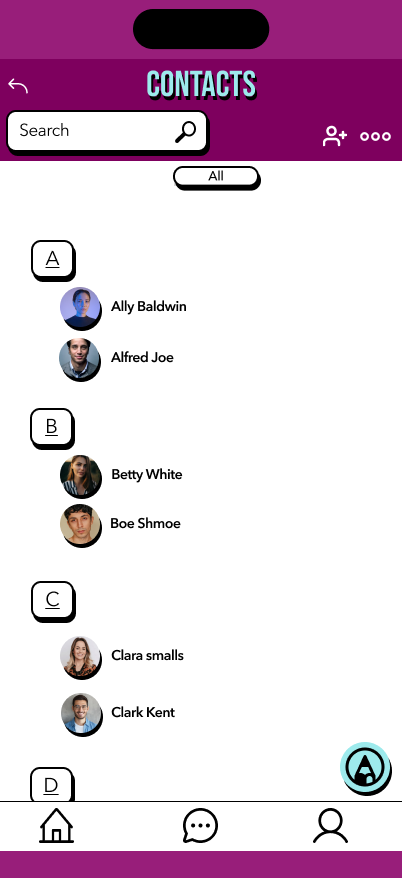
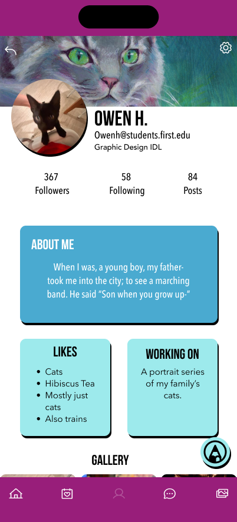
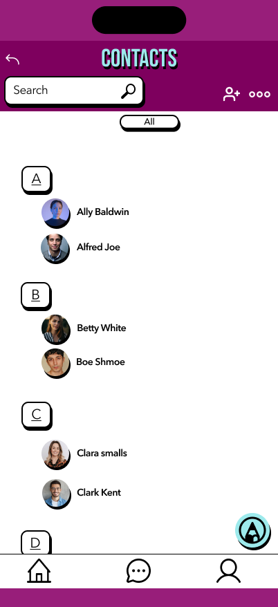
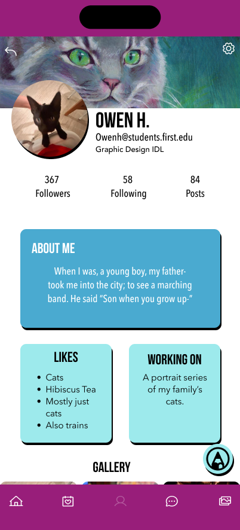
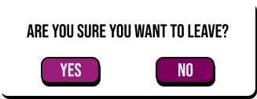
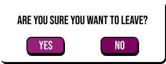

UX CASE STUDY - STUDENT APP
CLIENT: F.I.R.S.T Institute
TYPE: SCRUM (Group)
Time Duration: Oct 3rd 2024 | Five days
Roles & Responsiblities: Research & Wireframing
Tools Used: Figma
Overview
This was our final project for UX UI , and we worked in a group of four to develop a new social media app for F.I.R.S.T. Institute students. The goal of this project was to develop the main pages of the app, without delving too deep into the deeper individual pages of the site map. We were to follow F.I.R.S.T.'s brand guidelines to maintain brand consistency.
Requirments
Our group was responsible for designing 9 pages of an app. How we showed these in our designs are completely up to us and our group. This can be through links, buttons, icons, etc. These where the required pages.
- Home
- Sign-in Page
- Profile
- Inbox
- Chat
- Photo Gallery
- Event
- Contacts
- Groups Choice : Create a post

Design Process
As a group, we decided that each of us would work on two pages for the app. We agreed to conduct individual research and create wireframe sketches. My responsibility in the design process was to focus on the sign-in page and the home page. Additionally, I researched the overall aesthetic of the app.
To begin my research, I collected images that inspired the layout for both the sign-in and home pages. This helped me iterate on my ideas as I created our low-fidelity wireframes.
WireFrames
These lo-fi sketches were developed based on our research and served as a solid foundation for creating the mid-level wireframes. The insights gained during the research phase were instrumental in shaping the design direction and ensuring that the wireframes align with user needs and goals.
We turned our Mid level WireFrames into our high fidelity WireFrames, below are the pages i worked on, Sticking to the brand colors and Low-Fi design.
Here are the high-fidelity wireframes created by my group mates. You will notice a consistent layout throughout, as we collaborated and provided feedback to each other as a Scrum team. I contributed to finalizing the layout for the inbox page, and together we chose to create a ninth page for a "Create a Post" feature. We also included a prompt that asks, "Are you sure you want to leave?" if the user attempts to exit without creating a post.
 



 

Typography
We sticked to the neo brutalism loud typography and for buttons,textboxes and other elements we used sharp contrasts, unpolished design elements, asymmetry, , and vibrant color
Main Headings : We used the font Bebas Neue for our headings, 36px.
Subheadings:We used the font Bebas Neue for our sub-headings, 24px.
Body: For the body We used the font Avenir Next 17px.
Below are the assets we used and brand colors given to use by the client for their business.
Client brand colors
We worked with our client's brand colors. We used at least three of the colors listed below, and we went with what our research showed the school uses the most in its branding and other school merchandise.
Main Brand Colors
These are the two main colors our client uses mostly in their branding and school merchandise so we went with these two as they are the most recognized colors the students are familiar with when it comes to this client, our idea was to keep it familiar, so we used it in about 50% of our color choices.
Accent Colors
These are the three accent colors that are part of our client's brand, we use them in about 30% and 20% of our color choices, mostly on things like buttons and the sign-in background, we are glad about how this turned out because we carefully used the accent colors without overpowering the main colors.


Buttons
We created our buttons based on the neo-brutalism design aesthetic thick and colorful, we made small and large buttons, all used throughout the design, and we maintained this style for all the buttons and text boxes.
Icons
These are the two main colors our client uses mostly in their branding and school merchandise so we went with these two as they are the most recognized colors the students are familiar with when it comes to this client, our idea was to keep it familiar, so we used it in about 50% of our color choices.
Final Prototype
This was our final prototype for the student app using figma,it worked as desired by the client, all nine pages of the app were protoyed and worked well with each other. Here is a link to our protoype.
Mockups
Below are some mockups i created to display the student app in iphone screen mockups. Thank you for your time.